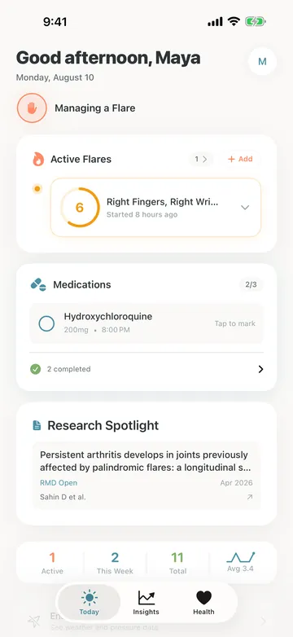
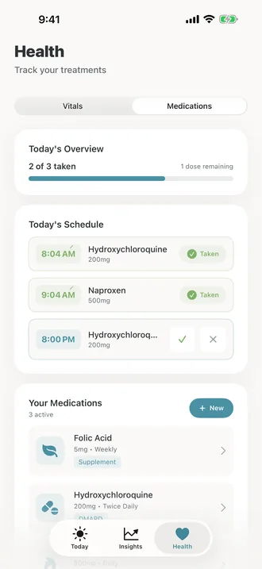
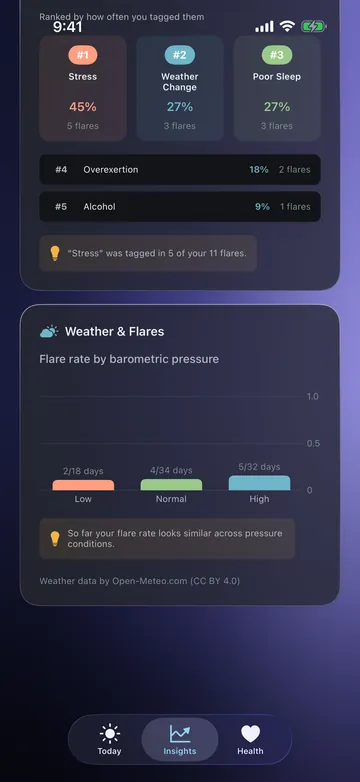
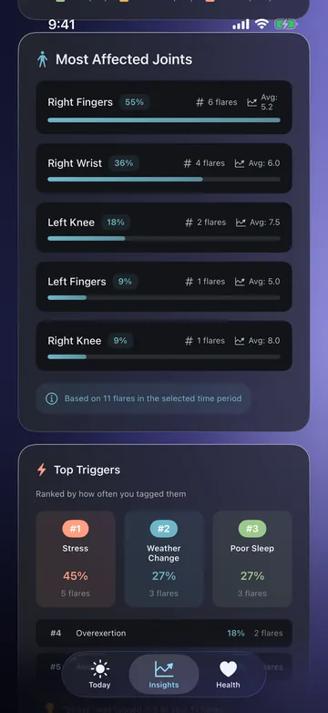
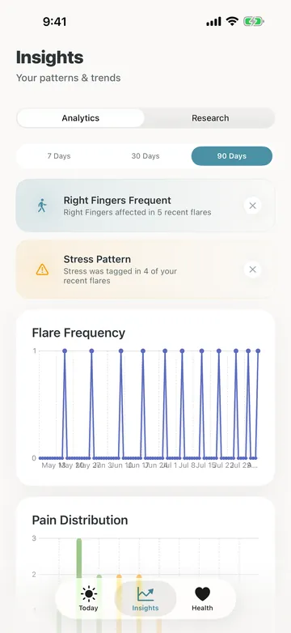
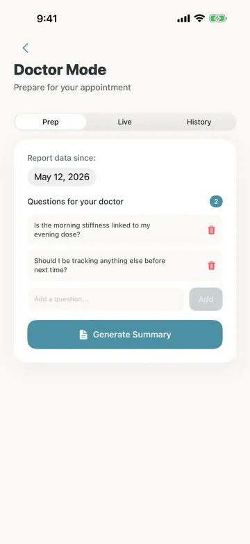
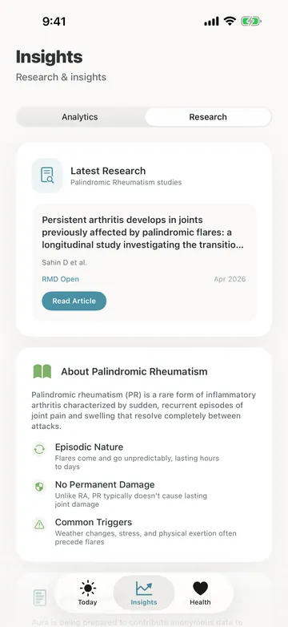

Palindromic rheumatism, tracked the way it behaves.
Flares arrive, move between joints, and resolve completely. Aura is built around that rather than around a constant ache, so logging one takes under a minute and months of them add up to something you can show a rheumatologist.
Coming to the App Store

Episodes, not a straight line.
Twelve weeks of a flare log. Some last an afternoon, some last most of a week, and the gaps between them are the part most trackers throw away.
Width is how long it lasted. Height is the pain level logged. Ticks are weeks. Illustration, not real data.
Doses
The times you actually take them.
Add each medication with its own dose times rather than a default the app picked for you. A reminder arrives when one is due, and the day's doses sit on the Today screen, so you can stop trying to remember whether this morning already happened.
Reminders are scheduled on the phone itself. There is no push server involved, and their contents never leave the device.

Weather
A percentage needs a denominator.
Aura records the weather every day you open it, not only on the days you flare. That is the difference between "flares on 2 of 18 low pressure days" and a number that is really just describing your local climate.
The comparison stays hidden until enough days have accumulated in more than one pressure band, and it says so plainly when the rate looks the same across all of them.

Patterns
What keeps coming up, once it has.
Joints and triggers ranked by how often you tagged them, held back entirely until there are enough flares for a ranking to mean anything. Two flares with one of them tagged "alcohol" is not a fifty per cent finding, so you get plain counts until the numbers can carry more.
Frequency is shown across weeks rather than days, because a condition that goes quiet for a fortnight looks like a cure on a daily chart.

The rest of the app.
Not everything needs a paragraph. These three are where Aura stops being a diary and starts being useful to somebody else.



It won't tell you more than it knows.
Most of the work in an app like this is deciding what not to say. Aura holds a number back until the sample can support it, and it never dresses a coincidence up as a cause.
What it does
- Logs a flare in under a minute: joints, pain, symmetry, and what you think set it off.
- Ranks the joints, triggers and symptoms that keep recurring.
- Compares flare days against the days you were fine.
- Schedules medication reminders locally, at your own dose times.
- Reads sleep, heart rate, HRV and activity from Apple Health, and only reads.
- Pulls new palindromic rheumatism papers from PubMed Central.
What it doesn't
- Predict a flare. Nothing can, and an app that suggests otherwise is guessing.
- Quote a percentage off the back of two or three flares.
- Send anything you log to a server. There isn't one.
- Carry analytics, advertising, or any third-party library at all.
- Diagnose, treat, or offer anything resembling medical advice.
Aura is not a medical device. It does not diagnose, treat or prevent any condition, and nothing it shows is medical advice. Any pattern it reports is descriptive only. Read the privacy policy.